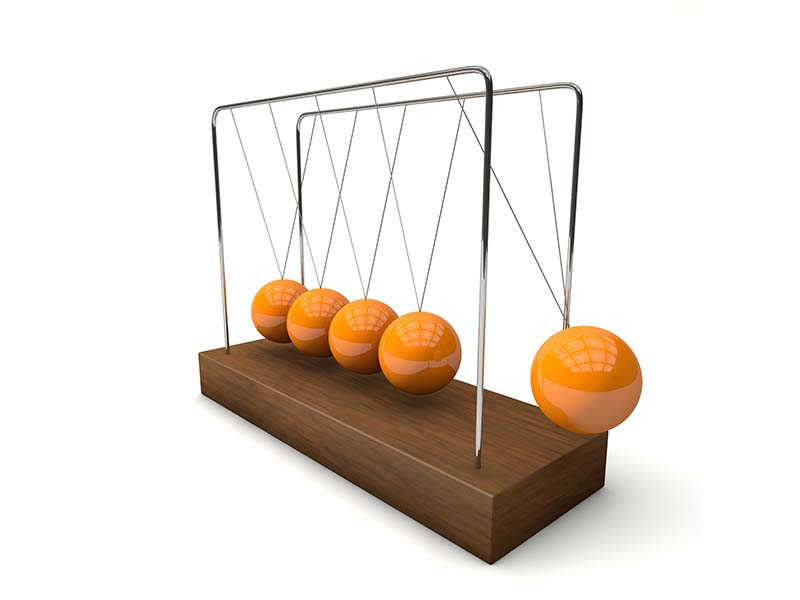

En oposición a las características generales de la materia, las propiedades específicas se hallan presentes sólo en algunos cuerpos y por eso caracterizan a las sustancias permitiendo diferenciarlas unas de otras.
Estas propiedades no tienen relación con la cantidad de materia, tal como ocurre con la masa, el peso o el volumen y también son conocidas como propiedades intensivas.
a. Dureza. Es la resistencia de un material a ser rayado por otro. El diamante es el material natural más duro que se conoce. La dureza se mide usando una escala denominada escala de Mohs.
b. Densidad. Es la relación que existe entre la masa que tiene el cuerpo y el volumen que ocupa. Es elevada en la mayoría de los sólidos, menor en los líquidos y aún menor en los gases. Se calcula con la fórmula m (masa)/v (volumen).
c. Conductividad eléctrica. Es la capacidad de ciertos elementos de permitir el paso de la corriente eléctrica como es el caso de los metales.
d. Solubilidad. Es la propiedad por la cual una sustancia se disuelve en otra sustancia. La materia disuelta se llama soluto y la que se disuelve es el solvente. No todas las materias se disuelven en un mismo solvente.
e. Brillo:
. Maleabilidad. Es la propiedad que permite que algunas sustancias puedan extenderse en láminas. Ejemplo: el aluminio con el que se fabrican ollas, muy usadas en nuestro país.
. Ductilidad. Ciertos materiales pueden ser extendidos en forma de hilos más o menos finos según la necesidad. El oro y la plata son muy usados en joyería porque presentan esta característica.
. Tenacidad. Es la resistencia de un material a romperse o deformarse por efecto de una fuerza. Un material muy tenaz es el acero, mientras que el vidrio es muy frágil. La fragilidad es la propiedad opuesta a la tenacidad.
. Punto de fusión. Es la temperatura a la que una sustancia sólida se funde, pasando al estado líquido.
. Punto de ebullición. Es la temperatura que un líquido debe alcanzar para pasar al estado líquido.
{kind=link}